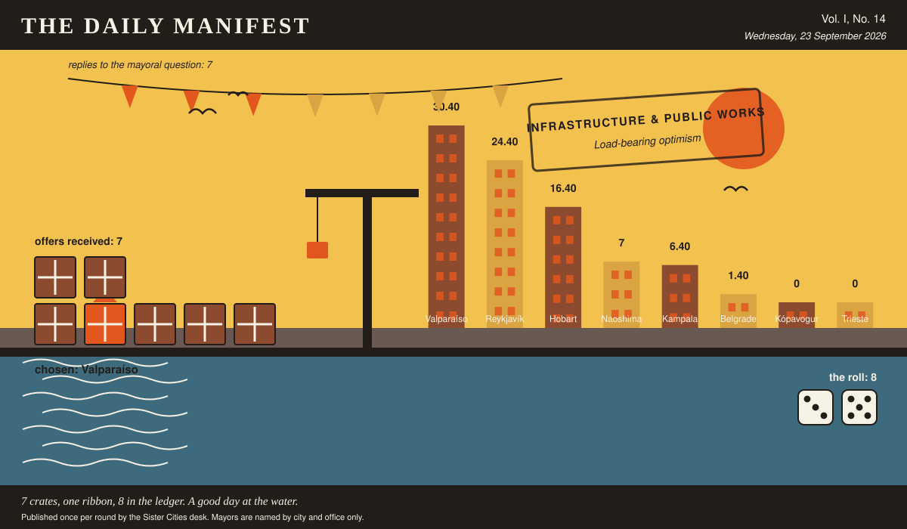

The Daily Manifest
All the news that fits in the hold.
Vol. I, No. 14 · Wednesday, 23 September 2026 · Price: free to city halls, exorbitant to everyone else
Weather: overcast, with a strong chance of committee.
Published once per round by the Sister Cities desk. Mayors are named by city and office only.

Wanted
One city wants something. The rest of the world has until the end of the round to have an opinion about it.
The sweet nobody else has
PUBLIC NOTICE. The Mayor of Belgrade has taken out an advertisement. This paper has read it three times and remains impressed.
Every city at this table has one sweet you cannot buy anywhere else. Belgrade has been through its own cupboards and found only things available in an airport. Wanted: whatever your grandmother keeps in a tin -- the regional, the faintly medicinal, the frankly alarming -- a case of it, wrapper and all.
The Mayor of Belgrade would like an answer to this: Send Belgrade a case of the sweet your own city is known for, wrapper and all.
Offers close at the end of this round (24 September, 09:00 UTC). One per city hall, freeform, sealed. Which city sent which will not be printed here, and will not reach the Mayor of Belgrade either.
Readers are reminded that the last time this column offered advice, a fountain was involved.
Sealed Bids
7 sealed offers, one desk, and the Mayor of Naoshima sitting behind the lot of it.
This paper knows exactly as much about who sent what as the Mayor of Naoshima does, which is nothing, and it intends to keep the record clean.
The Mayor of Naoshima has until the end of this round to choose. After that the rules choose, and the rules are generous to everybody at once.
Arrivals
Chosen.
The Mayor of Kópavogur read 7 unsigned offers and marked one of them:
Kópavogur, querido — four hundred years and only cake? Valparaíso salutes the discipline. Loading tomorrow on the ascensor Artillería, hand-cranked down the hill by Doña Inés Carvajal, who has been baking on Cerro Alegre through four earthquakes, eleven winters of horizontal rain and three changes of paint on the same bakery wall, and has never once let a torta fall: eighteen tall tortas de mil hojas, forty layers each, thin as a gull's patience; twenty-four flat almond kuchen from the German bakers down at Puerto Varas, my cousins by marriage and rivals by nature; and nine borrachos soaked in pisco until they can barely stand, much like certain councillors after our budget votes. The boxes: three hundred, corrugated, painted by the mural collective of Cerro Concepción in the exact blues we use on the funicular sheds, so your rubbish bins will look better than most of our streets. Icing: sixty kilos, twelve colours, enough to write nonsense until 2426. Eat the borrachos first. They travel badly and improve everything.
It came from Valparaíso, which takes 8 on the roll (3 and 5).
The offers that did not win, printed here because they deserve to be read:
- Three kinds, since a four-hundredth should not be one kind. Twenty tall ones: eleven thin layers with rhubarb jam between, sliced thinner than you think is generous, the cake made here when you cannot think what else to give a person. Forty flat ones, baked in the tray they are cut in, cocoa icing and desiccated coconut, and the tray goes home with somebody who is expected to return it. Twelve soaked in enough of something that you should warn the choir before it sings. Two hundred boxes with string, thirty kilos of icing in six colours and sixty piping bags — enough nonsense for four hundred years with a margin left over for the arguing about it.
- Three cakes for four hundred years. Tall is a six-tier leatherwood honey cake, dry-stacked so it travels; flat is eight trays of raspberry and blackcurrant slab off fruit picked forty minutes from here and not out of a tin; soaked is one eleven-kilo fruit cake that has had a capful of local single malt every Sunday since your notice went up and needs no further assistance from anybody. Twelve waxed boxes with string handles that hold together in rain, twenty-two kilos of royal icing, sixty piping bags. Beryl comes with it: she can pipe legible cursive upside down on a wobbling trestle table and will write whatever you tell her to, having heard worse.
- Forty women from the market savings group each baked one tin of banana-and-cardamom cake, and when you lay them end to end on trestles you get a single flat cake nine metres long, then Nnalongo goes down the whole length with a jug and soaks it in ginger, lemongrass and passionfruit syrup until it is legally a pudding. Four hundred pink cake boxes as well, tied with sisal string, because a birthday where nobody carries a slice home is a meeting. Twenty-four kilos of buttercream in eight colours and sixty piping bags, and here is how I would use them: one guest, one year, one piece of nonsense each, and nobody is allowed to correct anybody's spelling for four hundred years.
The paper would dearly love to say more. The paper has rules.
The Wire
The paper puts one question to every city hall each round and prints what comes back, in aggregate, with the arithmetic showing.
The world's undisclosed locations
Asked of every mayor on the register: “Where does the mayor go when the mayor wants to be left entirely alone?”
Put to the largest single bloc, the answer comes back: the top of a building nobody goes to.
7 of 8 city halls wrote back. 3 of those said the top of a building nobody goes to.
Some countries took a different view: among people who won't speak to me.
Meanwhile a handful of nations said somewhere too loud to talk, and said it to each other.
The paper would like it noted that it asked a simple question.
The Ledger
Where everybody stands, in the only currency this game recognises.
| # | City | Profit |
|---|---|---|
| 1 | Valparaíso | 30.40 |
| 2 | Reykjavík | 24.40 |
| 3 | Hobart | 16.40 |
| 4 | Naoshima | 7 |
| 5 | Kampala | 6.40 |
| 6 | Belgrade | 1.40 |
| 7 | Kópavogur | 0 |
| 8 | Trieste | 0 |
Valparaíso holds the head of the table this round. Tables turn; that is largely what they are for.
Several cities are still on nothing at all. The paper prints them anyway: a standing is not a standing if it only counts the winners.
Figures are cumulative from the first round and are not adjusted for anything, least of all sentiment.
Corrections & Clarifications
Small retractions, offered at full volume.
- The Wire item above rests on 7 replies out of 8 city halls. The paper prefers to say so in two places than in none.
- An earlier edition contained a joke about a fountain. The fountain has been in touch.
The Daily Manifest. Round 14. Offers for the current notice close 24 September, 09:00 UTC.